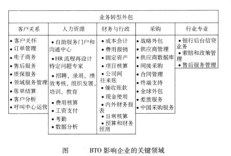

中銀香港
見習管理人員(MT)專題匯報
陳浩昇
香港中文大學
計量金融及風險管理科學
2017年1月5日
流程
- 世界瞬息萬變
- 銀行業時異事異
- 我們可以.....
- 見縫插針
- 爭分奪秒
1. 世界瞬息萬變
2016大事回顧
- 全球經濟不穩定
- 內地經濟增長放緩
- 金融市場波動
2. 銀行業時異事異
看看我們
四大藍圖
- 東盟及香港地區的戰略佈局
- 提高對客戶服務能力及優化業務流程和操作
- 多元化平台的競爭力
- 互聯網、大數據、雲計算等技術發展及與傳統業務融合
八大業務
信用卡
Credit Card
私人銀行
Private Banking
人壽保險
Life Insurance
資產管理
Asset Management
現金管理
Cash Management
託管
Custodian
信託
Trust
證券期貨
Securities and Futures
瞻望：如何提升銀行市場佔有率
開源 還是 節流
| 儲值支付工具 Stored Value Facilities - SVF |
 |
|
| 網上財富管理平台 Digital Wealth Management |
 |
|
| 電子貨幣 - 區塊鏈 Blockchain |
 |
 |
||
| 商業智能 Business Intelligence |
 |
|
 |
3. 所以，我們可以
程序機器人自動化
程序機器人自動化 (Robotic Process Automation - RPA)
- 將銀行現有系統、軟件，用一個簡單平台編排起來
- 新世代、自動化的數據挖掘 (Data Scraping/Data Mining)
- 訓練機器人如何去「閱讀」、整理及表達數據
(不論是圖像、文字格式)
Human
vs.
RPA from Blue Prism®
特點
- 原本的信息技術基建(IT infrastructure)無須改變，不用經過
整合(Integration)機器人於保留系統(Legacy System)中 - 面對未來任何新系統，只要經過「訓練」，機器人也可以運
作，並不斷可重用
建立過程
- 找出那些過程可以自動化
-
進行概念證明步驟 (Proof of Concept - PoC)
在一個開發環境中，根據中銀香港業務需求將程序進行自動化測試 - 成功後便實際運行及增大 (Implement and Scale)自動化規模

應用例子
交叉銷售（Cross Selling）

中銀集團保險
旅遊保險：環宇智選旅遊保障計劃

中銀信用卡
市場調研：分析顧客的需求
整理及表達 - 數據可視化
不同信用卡類別消費數據可視化（Data Visualization）(Demo)
4. 見縫插針
中銀香港的應用及優勢
| 跨服務或產品資料存取 | 交叉銷售（Cross Selling） | |
| 跨地區資料存取 |
克服香港與東盟國家隔膜 (語言、時差、數據格式) |
|
| 客戶需求數據處理及分析 | 大數據時代的市場調研 | |
| 兼容性 | 無懼系統更新及新監管要求 |
100%
全天侯運作0%
人為錯誤>25%
成本減少Source: Accenture Consulting
<20%
全職人力工時 (FTE)Source: Capgemini Consulting
注意事項
- Basel III/BCBS 239：中銀2011年加入G-SIBs
根據BCBS 239，中銀必須要維持良好數據治理(Data Governance)，能力和性能管理(Capability and Performance Management)以及壓力測試(Stress Testing)
- 銀行內部數據存取權限(Data Authentication)
機器人存取數據時，會考慮存取人、數據源頭及數據量
- 運作應用層面
引入DevOps；參考業務轉型外包(Business Transformation Outsourcing - BTO)指引 
5. 爭分奪秒
分享
同行都在嘗試什麼？
HSBC automated nearly 3,000 jobs in 2015
http://diginomica.com/2016/02/22/hsbc-automated-nearly-3000-jobs-in-2015/
Citi: Robots could kill another 30% of bank jobs
http://money.cnn.com/2016/04/04/investing/bank-jobs-dying-automation-citigroup/
Bank of England's chief economist: Robots threaten 15m UK jobs
https://www.theguardian.com/business/2015/nov/12/robots-threaten-low-paid-jobs-says-bank-of-england-chief-economist